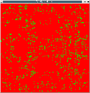
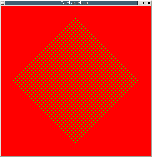
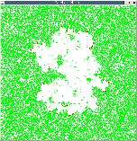

Examples
Hello World!
Here goes some explanations...(* The famous "Hello World!" written using two parallel processes and an internal communication. *) let process hello_word = signal s in await s; print_string "World!" || print_string "Hello "; emit s
Breadth First Traversal
Here goes some explanations...(* Definition the type of binary trees. *) type 'a tree = | Empty | Node of 'a * 'a tree * 'a tree (* Breadth first traveral using parallel composition (||) and synchronization of logical time (pause). *) let rec process iter_breadth f t = match t with | Empty -> () | Node (x, l, r) -> f x; pause; run (iter_breadth f l) || run (iter_breadth f r)
Dynamic Planets
-

N-body
This example is the classical N-body problem where the number of objects
can change during the execution.
A new planet is created when the mouse
button is pressed.
The key 'k' removes the planets in the order of creation
and 's' removes the sun.
The execution can be suspended and resumed with the key 'p'.
This example has been used in a tutorial for the
ReactiveML toplevel.
Implementation of Cellular Automata
This implementation has been made from the one of Frédéric Boussinot in Loft that can be found here.
-

John Conway's Game of Life
-

Fredkin's automaton
-

"Forest fire" automaton
Projects
Network simulator
Simulation of a complex network routing protocol for mobile ad hoc networks.
Glonemo
Glonemo (for Global network model) is a simulation tool for sensor networks.